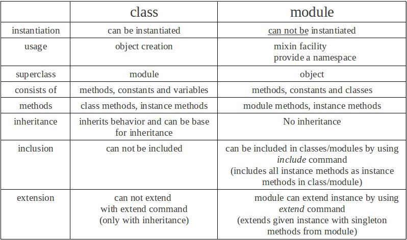

Week 6 Technical Blog - Ruby Classes & Modules

For this weeks technical blog post I've decided to go over the difference between Ruby classes and modules. There is much confusion between the difference and when to use one or the other. I hope by the time you are done reading, you will have a better understanding of the two and when to use them. If you haven't already, take a second to review the first image above this paragraph and then lets start with the Ruby class.
Ruby Class
Classes are blue prints. They describe how to build an object. They lay out objects characteristics(Variables) as well as abilities(Methods). This set of blue prints is used to instantiate an object(build and object). Classes are created using the class keyword. You can read more about classes by reading my previous technical blog post from last week.
Classes are the building blocks of Object Oriented Programming. They allow us to model real world things and ideas as well as providing a way of organizing our code. Everything in Ruby is an object created from a class. Arrays are objects created from the array class. Strings are objects created from the string class.
To use these classes we create or instantiate them. We say, for example, my_array = Array.new or we say my_array = []. Both are creating a new Array object that holds state for that copy.
Classes can also inherit from one another. For example, the Array and String classes derive from the base class object. They inherit characteristics from object much the way a child would inherit traits from it's parents. This give flexibility to how we model objects in Ruby but there are limitations as well. For instance, you can only inherit from one other class. This can be limiting and while other programming languages let you inherit form multiple classes or even to create interfaces, Ruby does not. This is where modules come in.
Ruby Modules
Modules are very much like classes and they even resemble them in code layout. They can have methods. Those methods can be instance or module much like class methods can be instance or class. However, the main difference is that modules are declared using the module keyword and CANNOT be instantiated. Modules can also have constants
Modules can be included in other classes. When included, the modules methods and variables are then made available to that class. They are now "Mixed In" with the class. Because of this, Modules allow us a great way to extend functionality of a class. It is also important to remember that when including a module in a class, only instance methods for the module would be available to the class much the way that class methods are not available to an instantiated object of a class.
Modules are also a great way to package your code. They can be used to group together methods, classes and constants that can then be used via the require keyword. Using modules this way provide a name space and remove the worry of naming conflicts. If we require a module in Ruby and that module has a variable or method name that is the same as a variable or method in our current code we do not have to worry about the ambiguity errors as we can call the module method through the modules name
Conclusion
Modules are a very powerful way to extend the functionality of classes when inheritance isn't enough. They also provide a great way to package code into name spaces. Classes are the building blocks of Ruby's Object Oriented roots and allow for modeling of real world things and ideas. Classes and be instantiated while modules can not. For more details, please read more about Classes and Modules below.
Resource